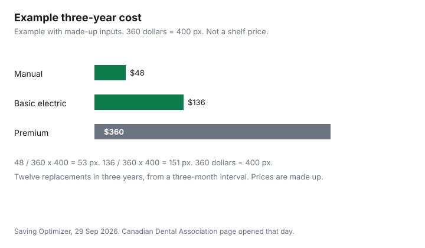

Personal Care · Canada
Electric Toothbrush Costs in Canada: Replacement Heads, Generic Heads and Manual Brushes
The handle is the price you notice. The heads are the price you keep paying. This page is that ownership sum over three years, for a manual brush, a basic electric brush, and a premium electric brush. The prices are an example with made-up inputs. The replacement count is not made up: the Canadian Dental Association page checked 29 Sep 2026 says to replace your toothbrush or toothbrush head, if you use an electric brush, when the bristles lose their shape, or every three months. Clinical care stays on the Healthcare guides. This page is products only, and it is not dental advice.
Disclosure: Amazon.ca storefronts are an offer type. Saving Optimizer may earn a commission if a partner link is added later. No partnership is claimed with Amazon or any brush brand. Education only. This page does not name a best toothbrush.
Key takeaways
- The Canadian Dental Association says to replace a toothbrush or an electric head when the bristles lose their shape, or every three months. The worked example buys four heads a year for three years, which is 12 heads.
- Example with made-up inputs: manual 48 dollars, basic electric 136 dollars, premium electric 360 dollars over three years. Not shelf prices.
- A generic head is a caveat about fit, bristle feel, and warranty.
- Black Friday on 27 Nov 2026 and Boxing Day on 26 Dec 2026 are dates to recheck a price, not verified discounts.
- Whether an electric toothbrush is classified under tariff item 8509.80.90, which is on the 25 percent surtax schedule, was not verified. Check with CBSA. This page does not say that it is.
Total cost of ownership over 3 years
Add the handle once. Add every head or manual brush you will buy before the three years end. Divide by three if you want a year, or leave the three-year total alone if you are comparing systems. A head still in the drawer after you have switched brushes is a cost, not a spare. Example with made-up inputs. The interval is four replacements a year, from the three-month rule, for three years, 12 in total, with no extra head bought on the last day. Manual brushes at 4 dollars each: 12 times 4 is 48 dollars. A basic electric handle at 40 dollars and heads at 8 dollars: 40 plus 96 is 136 dollars. A premium handle at 180 dollars and heads at 15 dollars: 180 plus 180 is 360 dollars.
Change the price cells. Do not change the story into a ranking. A premium handle you received as a gift has an upfront cost of zero in your worksheet and the same head cost if the heads are 15 dollars. A basic handle that includes two heads should not be charged for those two heads again. The Amazon.ca price guide is how to watch a head price over time. Subscribe and Save is a refill setting, not a reason to buy 12 heads on day one.
Brand vs generic heads: fit, quality and caveats
A replacement head has to seat on the handle you own. A generic head can be a different shape. If it does not click on and stay on, it is the wrong part, whatever the price. Bristle feel is something you can notice and this guide does not measure. A warranty sentence on the handle that limits heads to the same brand is a contract term to read before you buy the cheaper head. This guide does not cite a warranty for a named brush, so it quotes none.
This page does not call them safe and does not call them unsafe. It also does not name a brand of head. If you are buying a head because a dentist or hygienist told you to use a particular brush, that instruction outranks a price. The dental-work guide is where clinical bills are compared. This page stops at the product.
How often to replace heads
The Canadian Dental Association’s brushing page, checked 29 Sep 2026 at the oral-health basics address, says to use a soft-bristled toothbrush and that you can choose an electric toothbrush. It then says to replace your toothbrush or toothbrush head, if you use an electric toothbrush, when the bristles lose their shape, or every three months. That is the only interval this guide uses.
Frayed bristles earlier than three months mean replace earlier. A head that still looks neat at three months is still due, on this wording. Do not invent a six-month exception to save a purchase. The three-year count of 12 is four a year. If you replace early twice, the count goes up and the made-up total is no longer the total.
Sale timing and bundles
Black Friday is 27 Nov 2026 and Boxing Day is 26 Dec 2026 as calendar dates. They are days to check a price again, not days this guide verified a discount. A bundle is cheaper only when the price per head, times the heads you will use before they are due to be replaced, beats buying heads as you need them.
A bundle of eight heads, in the made-up basic price of 8 dollars, is 64 dollars. You need 12 heads over three years at the association interval, so eight heads do not finish the period. They also do you no good if you change handles and the heads no longer fit. Track the single-head price with the Amazon guide rather than assuming a seasonal cut.
Manual brushing: when it's enough
The same Canadian Dental Association page describes a manual technique and says you can choose an electric brush. It does not say an electric brush is required. In the made-up table the manual total is the smallest because there is no handle premium and the brush is the whole tool at 4 dollars. That is arithmetic, not a clinical finding that manual brushing is enough for you.
Whether a manual brush is enough is a question for your dentist or hygienist, especially if you have been told you miss areas along the gumline. This page will not answer it. The quote guide is the place to compare a cleaning or a treatment you have already been advised to have. A brush is not a substitute for that visit.
When to ask your dentist or hygienist instead
Ask when you are buying for a child, when your gums bleed in a way that worries you, when you have been given a specific brush or head, or when you are trying to decide that a manual brush is enough. This article cannot see your mouth. It can only show a product sum. The Canadian Dental Care Plan guide is the income test and the co-pay. This guide does not cite a services list that names toothbrushes or replacement heads, so it does not say the plan covers them or excludes them. Ask the office or the plan.
Tariff item 8509.80.90, other domestic electromechanical appliances, is on Schedule 2 of the United States Surtax Order (2026), at 25 percent, as read on 29 Sep 2026. Whether an electric toothbrush falls under that item was not verified. Check with CBSA at 1-800-461-9999 or your carrier. This page does not say that a toothbrush is subject to the surtax. A brush you buy in Canada does not need that question answered.
| Option | Handle | Heads or brushes a year | Price each, made up | Three-year total |
|---|---|---|---|---|
| Manual | The brush is the tool | 4 | 4 dollars | 48 dollars |
| Basic electric | 40 dollars | 4 | 8 dollars | 136 dollars |
| Premium electric | 180 dollars | 4 | 15 dollars | 360 dollars |
| Question | What to do |
|---|---|
| Fit | The head has to seat on your handle. If it does not, it is the wrong part. |
| Bristles | The association page says soft bristles with rounded bristles. This guide does not grade a generic head. |
| Warranty | Read the handle’s warranty before you assume a different head is allowed. No warranty was quoted. |
| Safety | This page does not call a generic head safe or unsafe. |

Sources & date stamps
- Canadian Dental Association, Flossing and brushing, checked 29 Sep 2026. Replace your toothbrush or toothbrush head when the bristles lose their shape, or every three months. Soft bristles. An electric toothbrush is a choice the page allows, not a requirement it states.
- United States Surtax Order (2026), Schedule 2, read 29 Sep 2026. Item 8509.80.90 is listed at 25 percent. This page does not classify a toothbrush under it.
- The handle and head prices are made-up inputs.
Frequently asked questions
How often should I replace an electric toothbrush head?
The Canadian Dental Association page checked 29 Sep 2026 says to replace your toothbrush or toothbrush head when the bristles lose their shape, or every three months. That is the interval this guide uses. This is not dental advice.
Are generic replacement heads safe?
This page does not call them safe or unsafe. A generic head can be a different shape, and a head that does not seat is the wrong part. Bristle feel and any warranty limit belong on the package, which this guide does not quote for a named brush. Ask your dentist or hygienist if you are choosing a head for a clinical reason.
Is an electric toothbrush worth the cost?
The made-up three-year totals are 48 dollars for a manual brush, 136 dollars for a basic electric, and 360 dollars for a premium electric, using four replacements a year from the three-month interval. Those prices are not a shelf. Worth it is whether you will use the brush, which this page does not decide for you. Clinical questions belong with your dental office and on the Healthcare guides linked below.
When do toothbrushes go on sale?
This page does not name a discount week as a fact. Black Friday is 27 Nov 2026 and Boxing Day is 26 Dec 2026 as calendar dates to recheck a price, not as verified sales. Track the single-head price over time, and compare a bundle by the price per head. A bundle of heads you will not use on that interval is not cheaper.
Does the Canadian Dental Care Plan cover toothbrushes?
This guide does not cite a services list that names toothbrushes or replacement heads, so it does not say they are covered or excluded. The plan's income test and co-pay are on the Canadian Dental Care Plan guide. Ask the dental office or the plan before you treat a brush as a benefit. A brush you buy yourself is a product cost on this page, not a clinical fee.
Researched and drafted with AI assistance and fact-checked against official Canadian sources. How we create content.